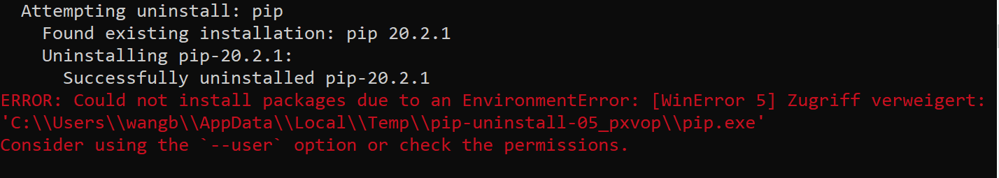
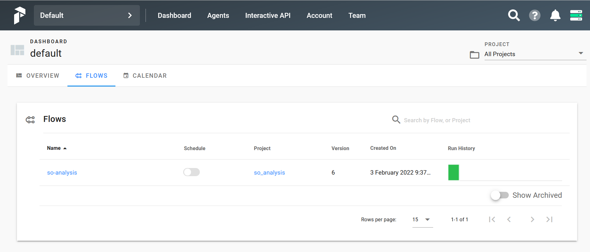
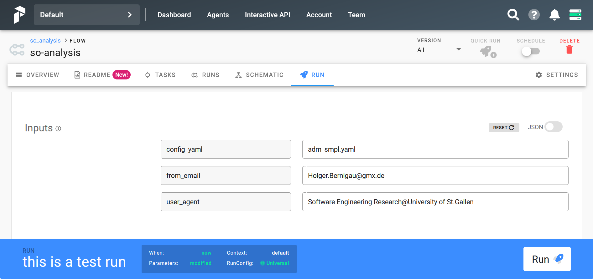
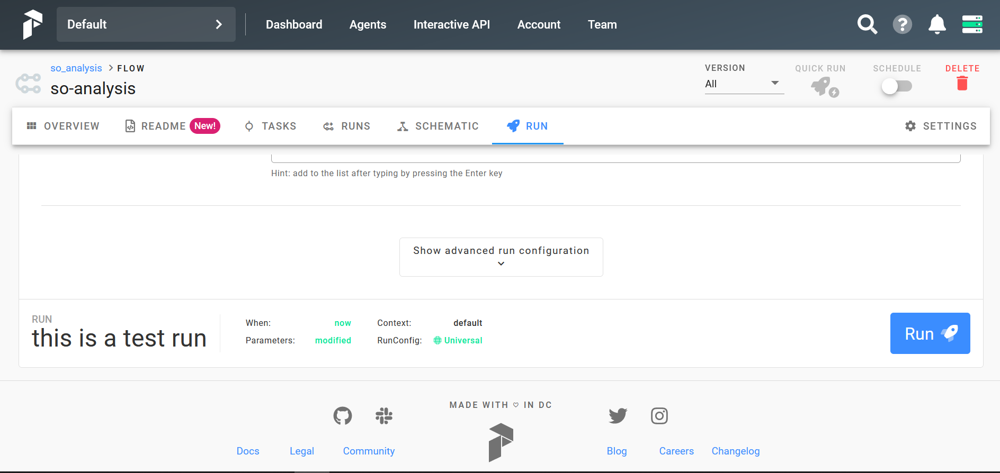
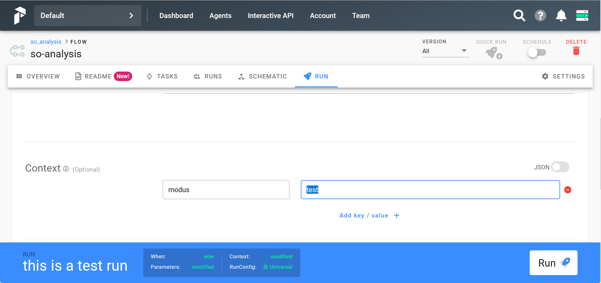

How to run stack overflow analysis
Get the repository
As a first step clone the repository:
cd <put-your-target-folder-here>
git clone https://github.com/HBernigau/StackOverflowAnalysis.git
After executing this command the folder StackOverflowAnalysis will be downloaded into the target folder. change into that folder by typing
cd StackOverflowAnalysis
Warning
All subsequent steps assume that you are within the package root, i.e. the folder <your_target_folder>/StackOverflowAnalysis.
Build the virtual environment
The application has been tested using Python 3.8.6 on a Windows computer with Windows 10 Enterprise.
If you want to use the same Python version, we recommend using pyenv as well. pyenv allows the management of multiple Python versions on the same machine. You can install a new python version (here: 3.8.6) by using the command
pyenv install 3.8.6
If you are in the application’s root folder, if you are using pyenv and if you installed Python 3.8.6, then the python version is automtically switched to 3.8.6 (this is what the file .python-version is good for). You can check this by typing
pyenv version
In order to build a new virtual environment in subfolder venv type:
python -m venv venv
Activate that environment by typing
activate_venv.bat
Warning
For the following commands we assume that the virtual environment has been activated.
For dependency management the current application uses pip-tools , which can be considered as a best-practice for dependency management in Python. Install it into your virtual environment using pip:
python -m pip install pip-tools
Note
If you encounter a permission error like the following:
Please switch to the user’s Appdata/Local/Temp folder in Windows explorer, right click on that folder and chose the menue item “Properties” from the context menue. In panel General uncheck the attribute read-only and in panel Security check the permissions and readjust if appropriate. Then re-run the previous command.
Note
When writing this guide, there exists an open issue regarding compatibility of pip and pip-tools (see issue 1558 for pip-tools on Github ), which can be fixed temporarily by the following work-around: Use a pip version below 22.0 .
The command for installing a specific pip version (21 here) is:
Now within your activated virtual environment, you can sync the project’s requirements file with the virtual environment by typing:
build_full.bat
If you want to re-generate the requirements file from first order dependencies (i.e. you prefer using the latest available versions of all libraries), then - before calling the build script, build_full.bat - enter the following command:
compile_full.bat
You can also use the frozen library versions first and update the libraries at any later point in time.
Start Docker containers
The application uses a PostgreSQL data base and an elastic search data base as backends which are run in Docker containers.
Hence, the application requires installation of Docker Desktop .
In order to run the application some environment variables must be set. This can best be done by copying the .env file from templates folder into the root folder and set the variable PGADMIN_DEFAULT_EMAIL to some email address that is then used as login information for PGAdmin , a management tool for PostgreSQL data bases.
Warning
For the following steps we assume that a valid .env file is located in the package root.
Note
You can also change other environment variables, like the password for PostgreSQL or various ports. The latter might be necessary, if you should encounter any port conflicts for example.
If you want to change the data base connection information in the .env file, please read the following note:
Note
If you alter PostgreSQL connection data, please note the following:
One of the Docker containers connects to the PostgreSQL data base and builds the latest version of the application’s data base using alembic . In order to make that work, please also adjust the database urls in ./alembic/alembic.ini, line 38 and in ./alembic/alembic_docker.ini, line 38 (as the names suggest, alembic_docker.ini is the connection data from within Docker).
Secondly the pgAdmin container requires valid connection data as well. Therefore, please adjust the settings in Docker/directories/pgadmin_config_data/servers.json
Last but not least the application itself requires valid connection strings as well, which can be adjusted in ./data/config/so_ana_config.yaml under db_opts -> postgres.
If you changed elastic search connection data, please adjust the application’s connection data in ./data/config/so_ana_config.yaml under db_opts -> elastic_search.
in order to start all Docker containers type the following in cmd:
launch_docker_containers.bat
Start Prefect
The application uses Prefect for workflow management, and the individual tasks are run in a dask-cluster .
In order to run the cluster do the following:
Start dask:
launch_dask.bat
Start the prefect server:
launch_prefect_server.bat
Start the prefect client:
launch_prefect_client.bat
Now you can use the command line application, so_ana.py, to interact with the server. In order to see all available commands, call:
python so_ana.py --help
Note
When configured as described above, prefect does not persist run-time information, i.e. prefect server loses any information about previous runs.
Even though prefect in principle allows providing a storage location for its PostgreSQL backend, this is not very helpful under windows, as assigning windows drives conflicts with Linux user-permission in Windows.
As a work-around you can use Docker managed drives. In order to do that, the file ./venv/Lib/site-packages/cli/docker-compose.yml has to be modified. In order to see an example, please open the file ./templates/.docker-compose_prefect.yml. The essential modifications are in:
Line 18: mapping the docker-managed drive “prefect_postgresdata_so_analysis” to /var/lib/postgresql/data
Line 19: mapping the back-up folder to /pg_backup/ / this is relevant if you want to back-up the prefect data base / otherhwise you can skip these lines
Line 147-148: defining the docker-managed drive prefect_postgresdata_so_analysis
Run your first sample workflow
Generally, flow configurations are stored in ./data/config. The most straight-forward way to run the sample configuration adm_smpl.yaml, is using the command line utility, so_ana.py:
activate_venv.bat
python so_ana.py run --test adm_smpl.yaml python so_ana.py run --test adm_smpl.yaml Holger.Bernigau@gmx.de "Software Engineering Research@University of St.Gallen"
This command executes the flow with configuration adm_smpl.yaml in test modus. For all requests to stack-overflow, the user provides some credentials within the request headers (from_email=”Holger.Bernigau@gmx.de” / user_agent=”Software Engineering Research@University of St.Gallen”). This is in line with ethical best-practices for web-scrapping .
A more convenient way to execute the flow, is submitting it to prefect server. This can be done by calling the following command:
python so_ana.py register
before running the script, you should clear all previous data (as the step names to be provided in the sample configuration are supposed to be unique).
python so_ana.py clear-db-data --test
Then enter “localhost:8080” in your favorite Browser to open prefect server’s UI. Change into Flows and select “so-analysis”
Select the “Run” button and enter the flow parameters:
In order to enable a test-run, open the advanced run configurations
and enter modus test:
After clicking the run button, a dashboard appears showing the run-time information of the flow.